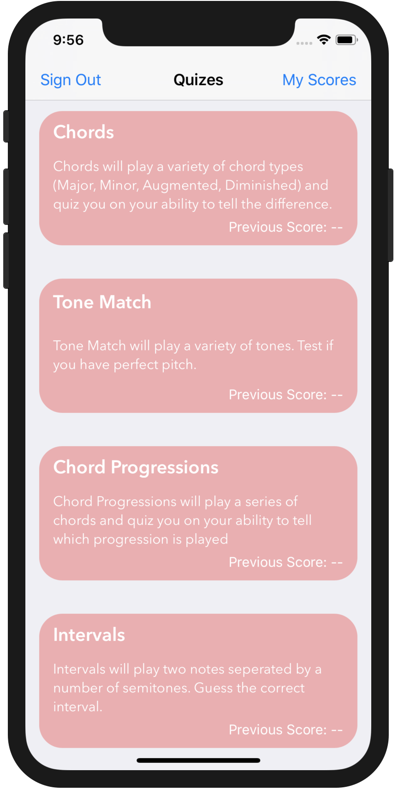

iOS Apps
|
Chord Finder iOS app for finding correct keys to play in various chords for piano players. Unpublished. Find code here |
|
Aural Trainer iOS app for ear training. Hear a certain chord and guess what type of chord is being played. Unpublished. Find code here |
 |
Personal Command Line Apps